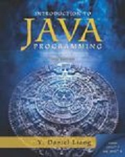

Joshua Harm's Favorite Books
This website contains several descriptions of my favorite books. I created this web site to give you some basic overviews of the books that I consider to be not only personal favorites of mine, but also educational. I hope you will like my book descriptions and furthermore, I hope you will purchase one of my books from Amazon. Listed below are my favorite books. Click one of them to see a detailed description of that book.

The C programming language by Dennis M Ritchie and Brian W Keringhan is an excellent book for both new comers and expert programmers. The book is packed with many examples and is yet small and concise. This book is written by the person that created the language, so there is no better source of information. I highly recommend this book to anyone who wishes to become a really good programmer... Read more

Database Systems is my favorite book for learning SQL and the principles of Database design. SQL is the primary language used for talking to a database, and this book explains the language in detail. Whether you are a novice or an advanced SQL developer, you will learn a lot from this... Read more

HTML and CSS is a great book for new comers to web Design. This book is packed with lots of examples, and is easy to read for beginners and challenging enough for experienced programmers and web designers. It is a must... Read more
Java programming could not be an easier book. This was my first book I ever read when it came to learning Java. I can tell you from experience that I have NEVER read a book better than this one when it came to learning Java. Java is a tough language to learn but this book makes it easy to get started building... Read more